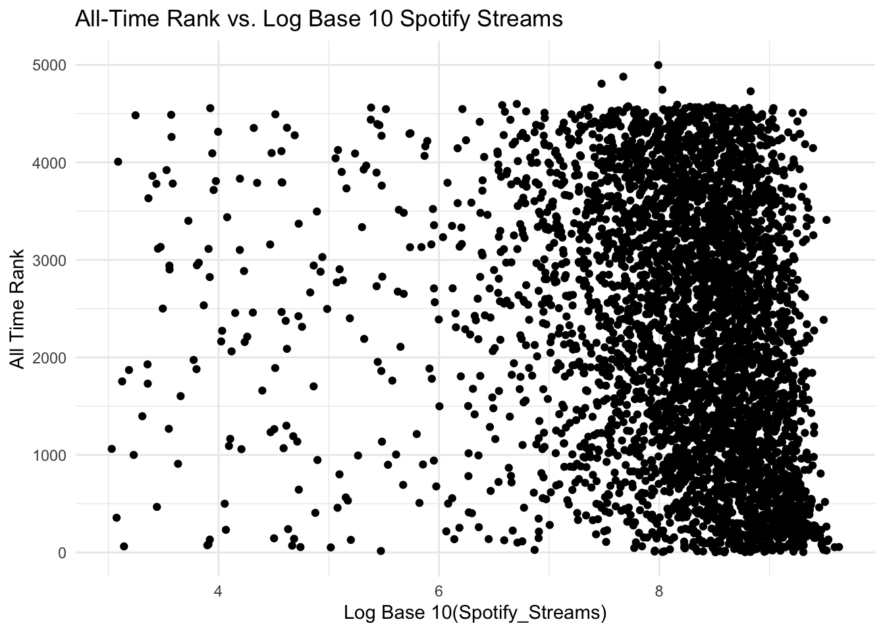
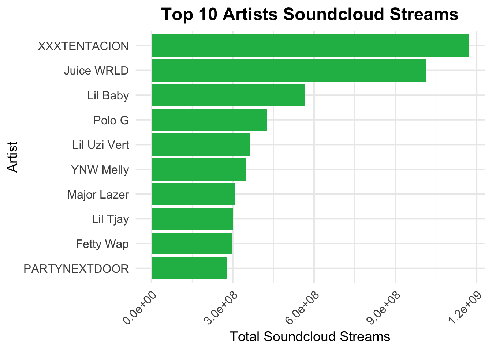
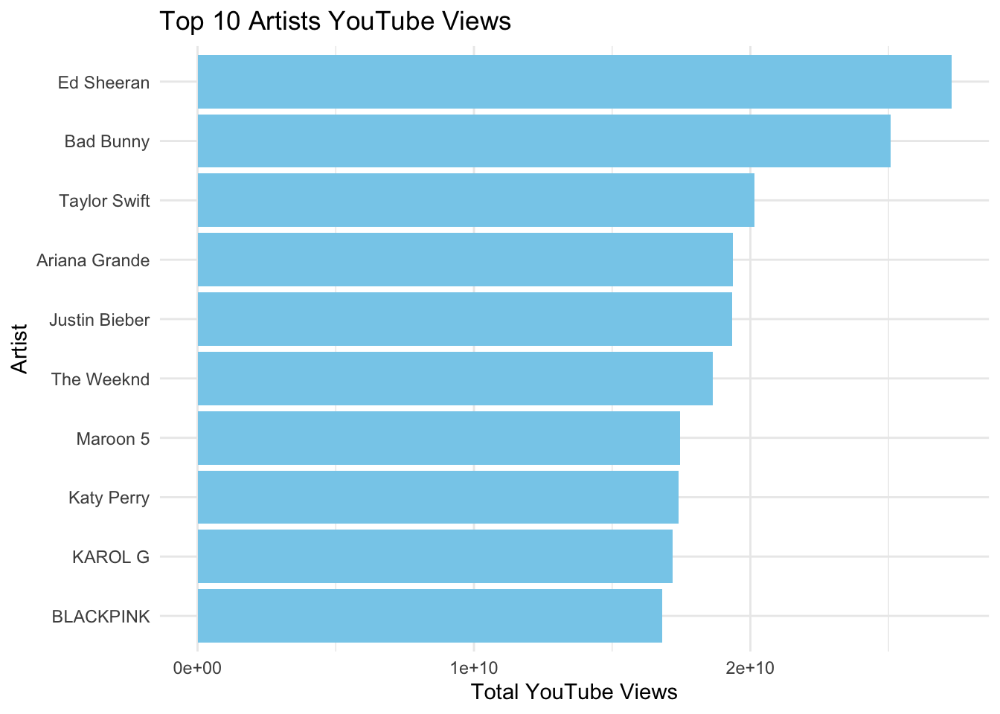
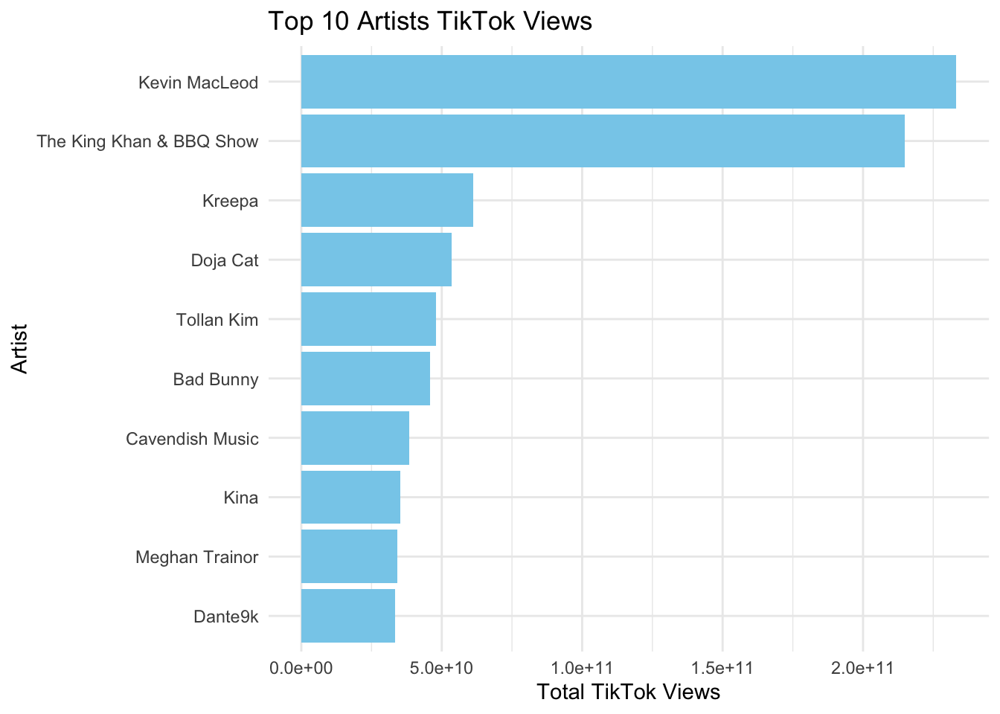
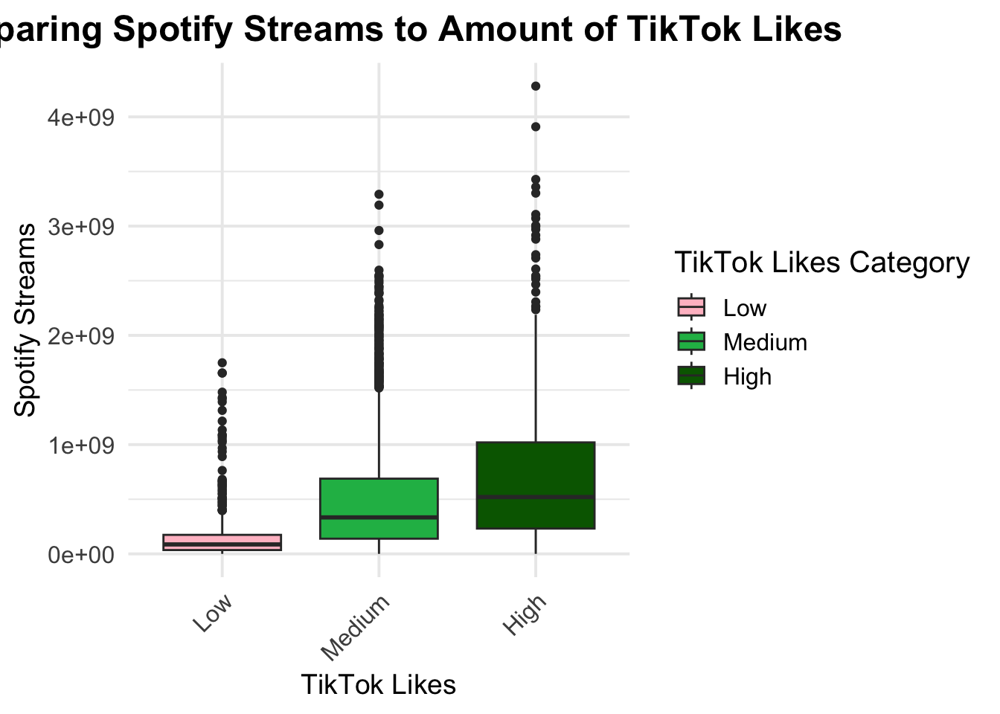
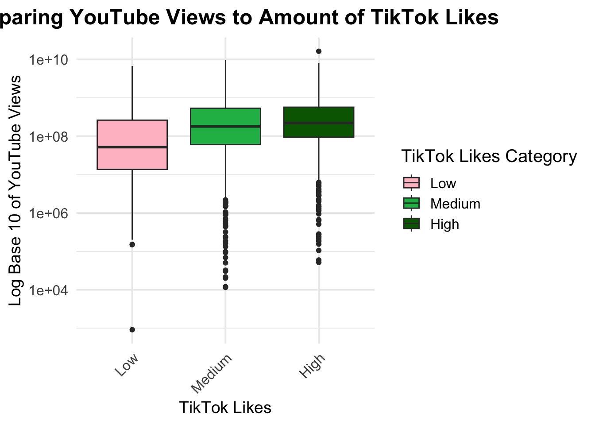
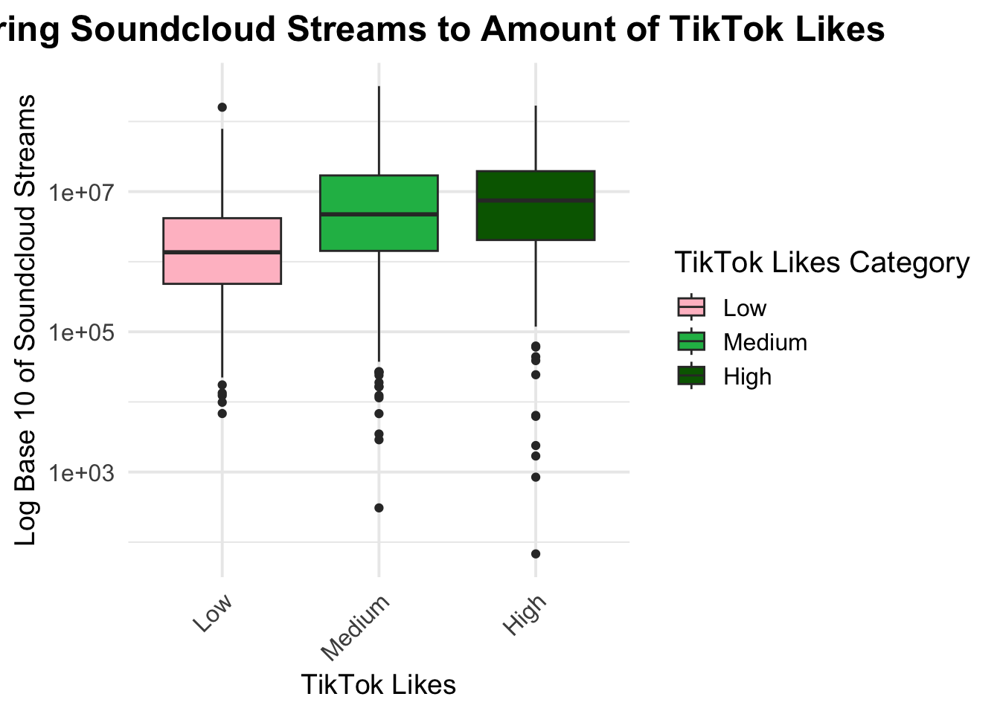
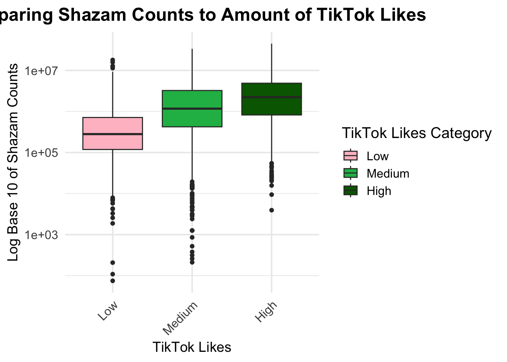

2024
Exploratory Data Analysis
Discussion of Raw Data
The 2024_data.csv dataset contains information about the most streamed songs on Spotify in 2024. Each track includes general basic information like the track name, artist name, and album name as well as extensive information on its reach across several streaming platforms (including Spotify, SoundCloud, Youtube, TikTok, Apple Music, etc. ). Popularity is measured across these different platforms through variables such as all time rank, number of streams, playlist reach, and playlist count.
Some issues that came up was with values having unsupported characters (e.g., in the album_name column) and that did not allow for analysis for the all time rank analysis. Another issue that we filtered out was that two tracks had a duplicate observation, but the duplicate observations did not have any streaming information and both had “xSyborg” listed as the artist name.
The dataset includes the following variables:
track_name: Name of the song.album_name: Name of the album the song belongs to.artist: Name of the artist(s) of the song.release_date: Date when the song was released.isrc: International Standard Recording Code for the song.all_time_rank: Ranking of the song based on its all-time popularity.track_score: Score assigned to the track based on various factors.spotify_streams: Total number of streams on Spotify.spotify_playlist_count: Number of Spotify playlists the song is included in.spotify_playlist_reach: Reach of the song across Spotify playlists.spotify_popularity: Popularity score of the song on Spotify.you_tube_views: Total views of the song’s official video on YouTube.you_tube_likes: Total likes on the song’s official video on YouTube.tik_tok_posts: Number of TikTok posts featuring the song.tik_tok_likes: Total likes on TikTok posts featuring the song.tik_tok_views: Total views on TikTok posts featuring the song.you_tube_playlist_reach: Reach of the song across YouTube playlists.apple_music_playlist_count: Number of Apple Music playlists the song is included in.airplay_spins: Number of times the song has been played on radio stations.siriusxm_spins: Number of times the song has been played on SiriusXM.deezer_playlist_count: Number of Deezer playlists the song is included in.deezer_playlist_reach: Reach of the song across Deezer playlists.amazon_playlist_count: Number of Amazon Music playlists the song is included in.pandora_streams: Total number of streams on Pandora.pandora_track_stations: Number of Pandora stations featuring the song.soundcloud_streams: Total number of streams on Soundcloud.shazam_counts: Total number of times the song has been Shazamed.explicit_track: Indicates whether the song contains explicit content.
2024 Most Streamed Songs on Spotify
Summary Statistics
summary_table=
dataset_2024 |>
summarize(
spotify_streams_mean = mean(spotify_streams, na.rm = TRUE),
spotify_streams_median = median(spotify_streams, na.rm = TRUE),
spotify_streams_iqr = IQR(spotify_streams, na.rm = TRUE),
youtube_views_mean = mean(you_tube_views, na.rm = TRUE),
youtube_views_median = median(you_tube_views, na.rm = TRUE),
youtube_views_iqr = IQR(you_tube_views, na.rm = TRUE),
soundcloud_streams_mean = mean(soundcloud_streams, na.rm = TRUE),
soundcloud_streams_median = median(soundcloud_streams, na.rm = TRUE),
soundcloud_streams_iqr = IQR(soundcloud_streams, na.rm = TRUE),
tiktok_views_mean = mean(tik_tok_views, na.rm = TRUE),
tiktok_views_median = median(tik_tok_views, na.rm = TRUE),
tiktok_views_iqr = IQR(tik_tok_views, na.rm = TRUE)
) |>
pivot_longer(
cols = everything(),
names_to = c("Platform", "Statistic"),
names_pattern = "(.*)_(.*)"
) |>
mutate(
Platform = case_when(
Platform == "spotify_streams" ~ "Spotify Streams",
Platform == "youtube_views" ~ "YouTube Views",
Platform == "soundcloud_streams" ~ "SoundCloud Streams",
Platform == "tiktok_views" ~ "TikTok Views",
TRUE ~ Platform
)
) |>
pivot_wider(
names_from = Statistic,
values_from = value
)
summary_table |>
gt() |>
tab_header(
title = "Summary Statistics Across Platforms",
subtitle = "Mean, Median, and Interquartile Range"
) |>
cols_label(
Platform = "Platform",
mean = "Mean",
median = "Median",
iqr = "Interquartile Range"
) |>
fmt_number(
columns = c(mean, median, iqr),
decimals = 0
) |>
tab_style(
style = list(
cell_text(weight = "bold")
),
locations = cells_column_labels()
)| Summary Statistics Across Platforms | |||
| Mean, Median, and Interquartile Range | |||
| Platform | Mean | Median | Interquartile Range |
|---|---|---|---|
| Spotify Streams | 452,866,259 | 243,931,915 | 564,475,793 |
| YouTube Views | 405,901,100 | 148,896,320 | 432,475,424 |
| SoundCloud Streams | 15,121,191 | 3,373,779 | 13,084,146 |
| TikTok Views | 1,149,031,801 | 266,934,347 | 846,777,161 |
Interpretation The mean versus median streams or views across all the platforms are very different from each other, indicating that the distribution of data is skewed for each platform. It is also interesting to note TikTok’s popularity, where the platform has both the most mean and median views compared to the other platforms. Spotify has the second greatest amount of mean and median streams for 2024.
Top 10 Songs All-Time Rank
top10rank_songs=
dataset_2024 |>
slice_head(n = 10)
table_top10rank =
top10rank_songs |>
select(track, artist, all_time_rank) |>
gt() |>
tab_header(
title = "Top 10 All Time Rank in 2024") |>
fmt_number(
columns = all_time_rank,
decimals = 0
) |>
cols_label(
track = "Song Title",
artist = "Artist",
all_time_rank = "All Time Rank"
)
table_top10rank| Top 10 All Time Rank in 2024 | ||
| Song Title | Artist | All Time Rank |
|---|---|---|
| MILLION DOLLAR BABY | Tommy Richman | 1 |
| Not Like Us | Kendrick Lamar | 2 |
| i like the way you kiss me | Artemas | 3 |
| Flowers | Miley Cyrus | 4 |
| Houdini | Eminem | 5 |
| Lovin On Me | Jack Harlow | 6 |
| Beautiful Things | Benson Boone | 7 |
| Gata Only | FloyyMenor | 8 |
| Danza Kuduro - Cover | MUSIC LAB JPN | 9 |
| BAND4BAND (feat. Lil Baby) | Central Cee | 10 |
Interpretation: This table displays the songs and artists for 2024 based on the all time rank, a variable in the data set that captures all time popularity. There are no repeated artists in this list meaning no single artist had more than one song in the top 10 all time rank.
Percentage of Explicit Tracks
explicit_song =
dataset_2024 |>
mutate(explicit_track = ifelse(explicit_track == 1, "Explicit", "Non-Explicit"))|>
count(explicit_track) |>
mutate(percentage = n / sum(n) * 100)
explicit_pie_chart =
ggplot(explicit_song, aes(x = "", y = percentage, fill = explicit_track)) +
geom_col(width = 1) +
coord_polar(theta = "y") +
geom_text(
aes(label = paste0(round(percentage, 1), "%")),
position = position_stack(vjust = 0.5),
color = "white",
size = 5 ) +
labs(
title = "Percentage of Explicit vs Non-Explicit Songs",
fill = "Song Type") +
theme_void() +
theme(
plot.title = element_text(hjust = 0.5, size = 18, face = "bold"),
plot.subtitle = element_text(size = 14, hjust = 0.5)) +
scale_fill_manual(values = c("Explicit" = "#1DB954", "Non-Explicit" = "darkgreen"))
explicit_pie_chart
Interpretation: This visualization is representing the percentage tracks categorized as explicit and not explicit in the entire data set. Evidently more than half of the songs are non-ecplicit (63.7%).
Top 10 Artists by Different Media Platforms
Top 10 Artists by Number of Most Streamed Songs
data_set_artist =
dataset_2024 |>
drop_na(artist)|>
group_by(artist) |>
summarise(
song_count = n(),
.groups = "drop")
top10artist_songs=
data_set_artist |>
arrange(desc(song_count)) |>
slice_head(n = 10)
table_top10artist_songs =
top10artist_songs |>
select(artist, song_count) |>
gt() |>
tab_header(
title = "Top 10 Artists in 2024") |>
fmt_number(
columns = song_count,
decimals = 0
) |>
cols_label(
artist = "Artist",
song_count = "Song Count"
)
table_top10artist_songs| Top 10 Artists in 2024 | |
| Artist | Song Count |
|---|---|
| Drake | 63 |
| Taylor Swift | 63 |
| Bad Bunny | 60 |
| KAROL G | 32 |
| The Weeknd | 31 |
| Travis Scott | 30 |
| Billie Eilish | 27 |
| Ariana Grande | 26 |
| Future | 23 |
| Peso Pluma | 22 |
Interpretation: This table represent the top 10 artists in the data set based on the amount of songs included in the data set which captures the most streamed songs. The mix of artists is diverse including Latin music, reggeton, pop, and rap artists.
Artists with the Top 10 Spotify Streams
dataset_2024 |>
drop_na(artist)|>
group_by(artist) |>
summarize(total_spotify_streams = sum(spotify_streams, na.rm = TRUE)) |>
arrange(desc(total_spotify_streams)) |>
top_n(10, total_spotify_streams) |>
ggplot(aes(x=total_spotify_streams, y=reorder(artist, total_spotify_streams))) +
geom_bar(stat = "identity", fill = "#1DB954") +
labs(
title = "Top 10 Artists Spotify Streams",
x = "Total Spotify Streams",
y = "Artist"
) +
theme_minimal(base_size = 15) +
theme(
plot.title = element_text(face = "bold", size = 18, hjust = 0.5),
plot.subtitle = element_text(size = 14, hjust = 0.5),
axis.text = element_text(size = 12),
axis.title = element_text(size = 14),
axis.text.x = element_text(angle = 45, hjust = 1)
) 
Artists with the Top 10 Soundcloud Streams
dataset_2024 |>
drop_na(artist)|>
group_by(artist) |>
summarize(total_sc_streams = sum(soundcloud_streams, na.rm = TRUE)) |>
arrange(desc(total_sc_streams)) |>
top_n(10, total_sc_streams) |>
ggplot(aes(x=total_sc_streams, y=reorder(artist, total_sc_streams))) +
geom_bar(stat = "identity", fill = "#1DB954") +
labs(
title = "Top 10 Artists Soundcloud Streams",
x = "Total Soundcloud Streams",
y = "Artist"
) +
theme_minimal(base_size = 15) +
theme(
plot.title = element_text(face = "bold", size = 18, hjust = 0.5),
plot.subtitle = element_text(size = 14, hjust = 0.5),
axis.text = element_text(size = 12),
axis.title = element_text(size = 14),
axis.text.x = element_text(angle = 45, hjust = 1)
) 
Artists with the Top 10 YouTube Views
dataset_2024 |>
drop_na(artist)|>
group_by(artist) |>
summarize(total_yt = sum(you_tube_views, na.rm = TRUE)) |>
arrange(desc(total_yt)) |>
top_n(10, total_yt) |>
ggplot(aes(x=total_yt, y=reorder(artist, total_yt))) +
geom_bar(stat = "identity", fill = "#1DB954") +
labs(
title = "Top 10 Artists YouTube Views",
x = "Total YouTube Views",
y = "Artist"
) +
theme_minimal(base_size = 15) +
theme(
plot.title = element_text(face = "bold", size = 18, hjust = 0.5),
plot.subtitle = element_text(size = 14, hjust = 0.5),
axis.text = element_text(size = 12),
axis.title = element_text(size = 14),
axis.text.x = element_text(angle = 45, hjust = 1)
) 
Artists with the Top 10 TikTok Views
dataset_2024 |>
drop_na(artist)|>
group_by(artist) |>
summarize(total_tt = sum(tik_tok_views, na.rm = TRUE)) |>
arrange(desc(total_tt)) |>
top_n(10, total_tt) |>
ggplot(aes(x=total_tt, y=reorder(artist, total_tt))) +
geom_bar(stat = "identity", fill = "#1DB954") +
labs(
title = "Top 10 Artists TikTok Views",
x = "Total TikTok Views",
y = "Artist"
) +
theme_minimal(base_size = 15) +
theme(
plot.title = element_text(face = "bold", size = 18, hjust = 0.5),
plot.subtitle = element_text(size = 14, hjust = 0.5),
axis.text = element_text(size = 12),
axis.title = element_text(size = 14),
axis.text.x = element_text(angle = 45, hjust = 1)
) 
Interpretation The top 10 artists with the most streams or views across Spotify, Soundcloud, YouTube, and TikTok vary widely. Streaming platforms like Spotify and TikTok (which have the highest number of user streams) have top artists that more fall under the pop genre, while Soundcloud has almost exclusively rap artists (with the exception of Major Lazer).
Top Songs on Streaming Apps
Top 10 Streamed Songs
dataset_2024 =
dataset_2024 |>
mutate(
cumulative_streams = rowSums(across(c(pandora_streams, spotify_streams, soundcloud_streams, you_tube_views)), na.rm = TRUE)
)
top10stream_songs=
dataset_2024 |>
arrange(desc(cumulative_streams)) |>
slice_head(n = 10)
table_top10streams =
top10stream_songs |>
select(track, artist, cumulative_streams) |>
gt() |>
tab_header(
title = "Top 10 Streamed Songs in 2024",
subtitle = "Aggregated across Spotify, Pandora, YouTube, TikTok, and Soundcloud"
) |>
fmt_number(
columns = cumulative_streams,
decimals = 0
) |>
cols_label(
track = "Song Title",
artist = "Artist",
cumulative_streams = "Cumulative Streams"
)
table_top10streams| Top 10 Streamed Songs in 2024 | ||
| Aggregated across Spotify, Pandora, YouTube, TikTok, and Soundcloud | ||
| Song Title | Artist | Cumulative Streams |
|---|---|---|
| Baby Shark | Pinkfong | 17,130,038,270 |
| Shape of You | Ed Sheeran | 12,735,170,983 |
| Despacito | Luis Fonsi | 11,550,832,722 |
| Perfect | Ed Sheeran | 10,061,181,657 |
| Uptown Funk | Mark Ronson | 8,631,856,167 |
| See You Again (feat. Charlie Puth) | Wiz Khalifa | 8,227,910,031 |
| Believer | Imagine Dragons | 8,118,809,056 |
| Closer | The Chainsmokers | 7,786,168,149 |
| Let Her Go | Passenger | 7,269,695,668 |
| Sorry | Justin Bieber | 6,977,552,595 |
Interpretation This table aggregates the views and streams from Spotify, Pandora, YouTube and SoundCloud to show which song had the most streams. Streaming is defined loosely to include views as streams, both of which are arguably passive consumption compared to a like. The highest streamed song has over 200 billion streams. There is no overlap between the top 10 songs by all time rank and the list of most streamed songs indicating some dissonance between the the popularity of the song as defined by the all_time_rank variable and the streams.
Top 10 Streamed Songs on Spotify and Soundcloud
get_top_songs <- function(data, metric, top_n = 10) {
data |>
select(track, artist, !!sym(metric)) |>
drop_na(track) |>
arrange(desc(!!sym(metric))) |>
head(top_n) |>
gt() |>
tab_header(
title = paste("Top Songs by", gsub("_", " ", metric)),
subtitle = paste("Based on", metric, "metrics")
) |>
fmt_number(
columns = !!sym(metric),
decimals = 0
) |>
cols_label(
track = "Track Name",
artist = "Artist",
!!sym(metric) := gsub("_", " ", metric)
)
}
top_spotify <- get_top_songs(dataset_2024, "spotify_streams")
top_soundcloud <- get_top_songs(dataset_2024, "soundcloud_streams")
top_youtube <- get_top_songs(dataset_2024, "you_tube_views")
top_tiktok <- get_top_songs(dataset_2024, "tik_tok_views")
top_spotify| Top Songs by spotify streams | ||
| Based on spotify_streams metrics | ||
| Track Name | Artist | spotify streams |
|---|---|---|
| Blinding Lights | The Weeknd | 4,281,468,720 |
| Shape of You | Ed Sheeran | 3,909,458,734 |
| Someone You Loved | Lewis Capaldi | 3,427,498,835 |
| Sunflower - Spider-Man: Into the Spider-Verse | Post Malone | 3,358,704,125 |
| As It Was | Harry Styles | 3,301,814,535 |
| As It Was | Harry Styles | 3,299,082,422 |
| Starboy | The Weeknd | 3,291,262,413 |
| One Dance | Drake | 3,192,204,066 |
| STAY (with Justin Bieber) | The Kid LAROI | 3,107,100,349 |
| STAY (with Justin Bieber) | The Kid LAROI | 3,107,100,349 |
top_soundcloud| Top Songs by soundcloud streams | ||
| Based on soundcloud_streams metrics | ||
| Track Name | Artist | soundcloud streams |
|---|---|---|
| Fuck Love (feat. Trippie Redd) | XXXTENTACION | 319,835,943 |
| XO Tour Llif3 | Lil Uzi Vert | 264,706,631 |
| Lucid Dreams | Juice WRLD | 257,459,352 |
| All Girls Are The Same | Juice WRLD | 229,990,892 |
| From The D To The A (feat. Lil Yachty) | Tee Grizzley | 222,229,993 |
| Drip Too Hard (Lil Baby & Gunna) | Lil Baby | 221,209,258 |
| Panda | Desiigner | 212,661,473 |
| DIME QUE | Ian G. | 210,524,496 |
| Trap Queen | Fetty Wap | 205,958,155 |
| Murder On My Mind | YNW Melly | 197,889,011 |
Interpretation Interestingly, the top 10 spotify streamed songs and the top 10 soundcloud streamed songs had no overlap in track or artist. Spotify’s top songs are more mainstream and fall under the Pop genre, while SoundCloud’s top songs fall under the Hip Hop/Rap genres.
Streams, Views, and Intrigue by TikTok Popularity
Comparing Tik Tok Likes to Streams Across Spotify, Soundcloud, and Youtube
dataset_2024 |>
drop_na(tik_tok_likes) |>
mutate(tik_tok_likes_log=log10(tik_tok_likes)) |>
mutate(
tiktok_category = case_when(
tik_tok_likes_log <= log10(1e6) ~ "Low",
tik_tok_likes_log <= log10(1e8) ~ "Medium",
tik_tok_likes_log > log10(1e8) ~ "High"
),
tiktok_category = factor(tiktok_category, levels = c("Low", "Medium", "High"))
) |>
ggplot(aes(x = tiktok_category, y = spotify_streams, fill = tiktok_category)) +
geom_boxplot() +
scale_fill_manual(
values = c(
"Low" = "pink",
"Medium" = "#1DB954",
"High" = "darkgreen"
)
) +
labs(
title = "Comparing Spotify Streams to Amount of TikTok Likes",
x = "TikTok Likes",
y = "Spotify Streams",
fill = "TikTok Likes Category"
) +
theme_minimal(base_size = 15) +
theme(
plot.title = element_text(face = "bold", size = 14, hjust = 0.5),
plot.subtitle = element_text(size = 14, hjust = 0.5),
axis.text = element_text(size = 12),
axis.title = element_text(size = 14),
axis.text.x = element_text(angle = 45, hjust = 1)
) 
dataset_2024 |>
drop_na(tik_tok_likes) |>
mutate(tik_tok_likes_log=log10(tik_tok_likes)) |>
mutate(
tiktok_category = case_when(
tik_tok_likes_log <= log10(1e6) ~ "Low",
tik_tok_likes_log <= log10(1e8) ~ "Medium",
tik_tok_likes_log > log10(1e8) ~ "High"
),
tiktok_category = factor(tiktok_category, levels = c("Low", "Medium", "High"))
) |>
ggplot(aes(x = tiktok_category, y = you_tube_views, fill = tiktok_category)) +
geom_boxplot() +
scale_fill_manual(
values = c(
"Low" = "pink",
"Medium" = "#1DB954",
"High" = "darkgreen"
)
) +
labs(
title = "Comparing YouTube Views to Amount of TikTok Likes",
x = "TikTok Likes",
y = "Log Base 10 of YouTube Views",
fill = "TikTok Likes Category"
) +
scale_y_log10() +
theme_minimal(base_size = 15) +
theme(
plot.title = element_text(face = "bold", size = 14, hjust = 0.5),
plot.subtitle = element_text(size = 14, hjust = 0.5),
axis.text = element_text(size = 12),
axis.title = element_text(size = 14),
axis.text.x = element_text(angle = 45, hjust = 1)
) 
dataset_2024 |>
drop_na(tik_tok_likes) |>
mutate(tik_tok_likes_log=log10(tik_tok_likes)) |>
mutate(
tiktok_category = case_when(
tik_tok_likes_log <= log10(1e6) ~ "Low",
tik_tok_likes_log <= log10(1e8) ~ "Medium",
tik_tok_likes_log > log10(1e8) ~ "High"
),
tiktok_category = factor(tiktok_category, levels = c("Low", "Medium", "High"))
) |>
ggplot(aes(x = tiktok_category, y = soundcloud_streams, fill = tiktok_category)) +
geom_boxplot() +
scale_fill_manual(
values = c(
"Low" = "pink",
"Medium" = "#1DB954",
"High" = "darkgreen"
)
) +
labs(
title = "Comparing Soundcloud Streams to Amount of TikTok Likes",
x = "TikTok Likes",
y = "Log Base 10 of Soundcloud Streams",
fill = "TikTok Likes Category"
) +
scale_y_log10() +
theme_minimal(base_size = 15) +
theme(
plot.title = element_text(face = "bold", size = 14, hjust = 0.5),
plot.subtitle = element_text(size = 14, hjust = 0.5),
axis.text = element_text(size = 12),
axis.title = element_text(size = 14),
axis.text.x = element_text(angle = 45, hjust = 1)
) 
Comparing Tik Tok Likes to Shazam Counts
dataset_2024 |>
drop_na(tik_tok_likes) |>
mutate(tik_tok_likes_log=log10(tik_tok_likes)) |>
mutate(
tiktok_category = case_when(
tik_tok_likes_log <= log10(1e6) ~ "Low",
tik_tok_likes_log <= log10(1e8) ~ "Medium",
tik_tok_likes_log > log10(1e8) ~ "High"
),
tiktok_category = factor(tiktok_category, levels = c("Low", "Medium", "High"))
) |>
ggplot(aes(x = tiktok_category, y = shazam_counts, fill = tiktok_category)) +
geom_boxplot() +
scale_fill_manual(
values = c(
"Low" = "pink",
"Medium" = "#1DB954",
"High" = "darkgreen"
)
) +
labs(
title = "Comparing Shazam Counts to Amount of TikTok Likes",
x = "TikTok Likes",
y = "Log Base 10 of Shazam Counts",
fill = "TikTok Likes Category"
) +
scale_y_log10() +
theme_minimal(base_size = 15) +
theme(
plot.title = element_text(face = "bold", size = 14, hjust = 0.5),
plot.subtitle = element_text(size = 14, hjust = 0.5),
axis.text = element_text(size = 12),
axis.title = element_text(size = 14),
axis.text.x = element_text(angle = 45, hjust = 1)
) 
Interpretation When looking at the graphs that compare Spotify streams, YouTube views, Soundcloud streams, and Shazam counts, one can see that increased Tik Tok likes (going from the Low to High category) is associated with increased track streams or views. This makes sense that the more popular songs on streaming platforms or songs that people want to know the name of (through using Shazam) would also be popular on TikTok.
Note: Due to the very large range of TikTok likes, a log base 10 was
taken when creating a categorical variable
(tiktok_category) for TikTok likes. Log base 10 was also
taken of YouTube Views, Soundcloud streams, and Shazam counts to make
data easier to digest and interpret when comparing to TikTok Likes
categories.
A work by Meredith Steinberg, Laura Bulmer, Mia Isaacs, Iris Hart, Anne Gorman, and Carolyn Martinez Jorge.
© Copyright 2024 The Decoding Music Trends Project Team, All Rights Reserved | Powered by Github.io